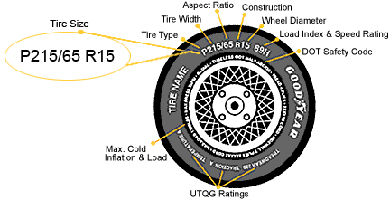

Note: Comment box is at the very bottom.
My review on Balsamiq Mockups
August 23 2014
I've been using Balsamiq Mockups pretty diligently for the past few months now. I use them for prototyping personal ideas and work ideas. Balsamiq is great for several reasons. Below is a screenshot of a Balsamiq mockup I made when I first started learning the tool. It's a website mockup for a restaurant. The left panel contains the controls and the right panel contains your mockup. Components are drag-and-drop, place them on your mockup, and edit the content. Each component can be used as a link to another mockup.
Why I enjoy Balsamiq
The hand-drawn look allows people to criticize more openly. The work doesn't look complete, and so the feedback is more general around the concept of the idea. This article talks about the 30-percent trick. The idea is that if you clarify how complete your work is - 90% done or only 30% done - you can request different types of feedback. An excerpt from the article - "If I was ninety percent done, he [the investor, Seth] would try to correct me on every little detail possible because otherwise a typo might make it into production. But if I had told him I was only thirty percent done, he would gloss over the tiny mistakes, knowing that I would correct them later. He would engage in broader conversations about what the product should be." Balsamiq offers the scope of 30-40% done with hand-drawn look, and it allows more people to provide more general and honest feedback on a young idea.
There are so many components out there. With websites like MockupsToGo, more layouts and buttons are available for Balsamiq users to authentically replicate controls for an Android Galaxy S5 or the iPhone 4S. In a world where device overload is prevalent, it is important that we mockup features on desktop, mobile, laptop, and tablet.
I could prototype this on a webpage, but it's easier to drag-and-drop components onto a fake website screen instead. Even with my favorite web development tool, Bootstrap, it takes a twice as much time to create the layout, fiddle with the CSS, and provide something that is responsive on several devices. Balsamiq allows me to create a single mockup and port it onto different screens as pngs or pdfs.
And it's pretty! And it gets the point across. And developers can understand the information design and interface design well enough.
Areas of improvement for Balsamiq
If they could provide me a script or plug-in that converts the Balsamiq into a real web app or mobile app that I could port onto a native device, my life would be complete. Currently they allow export in .pdf and .png, but that's not enough for experiencing the app realistically. One idea is to introduce Bootstrap components that map 1:1 with Balsamiq components to create an interactive, identical version, I will be a devoted user for life.
'Clicking' is the main user interaction in Balsamiq. If I'm developing a mockup for mobile, I would like to have others simple gestures: swipe, scroll. For web, I would like to add mouseover and simple animation (to show/hide widgets or mockup screens). With just clicking as the main tool, I am limited for when I want to display interactively to my team. For some feature demonstrations at work, I have resorted to PowerPoint mockups because I require more functionality than the 'click' action allowed in Balsamiq.
---In conclusion, I enjoy using Balsamiq for early prototype iteratations early in the design process. I meet with feature owners at work to alter the mockups and refine them, before they are sent off to development teams as a blueprint for the code. The tool is easy to learn, fun to use, and provides a good starting point to understand a feature, its components, and discuss improvements. Well done, Balsamiq team!
P.S. I am always on the look-out for more wireframing and mockup tools.
Having a temporary limp
August 17 2014
Last week I unfortunately ran into a slight hiccup in my physical health. I was playing the usual Tuesday evening drop-in volleyball. I guess I didn't stretch enough or decided to do a different run-up. But as I was making my first spike of our first game, I remember: being in the air, I had jumped quite high, hitting the ball with my palm, and as I was on my way down, I suddenly felt like someone behind me kicked me really hard in the back of the knee. Falling further, I wondered, "Why would anyone do that?" As I hit the floor, I realized my knee had acted on its own will and I couldn't move. The others eventually carried me to the side, and after some ice and sitting through pain, I was able to limp into my car and back home.
It turns out that I pulled several ligaments that attach at the knee. As per my doctor, it'll take about 2 weeks to heal as long I as follow his procedures. This includes some painkillers, icing the knee, stretching it out, and wearing a knee brace. Wearing a knee brace in public, has been quite an experience. Below are the following realizations I've made as a temporary disabled person.
- People talk to me a lot more now. People I see on the walk from my car to my office building that I've never spoken to, will walk by and make temporary conversation about my knee. I guess I'm finally meeting the faces I see around my cubicle.
- Little kids stare at me with curiosity as to what might have happened (or if I've always been this way). I would like to think that they looked at me before more out of respect or admiration for being a young, working professional. But now, it's definitely for being out-of-the-ordinary.
- People are a lot nicer to me. They will hold open doors to let me in, make sure that I can get into an elevator on time, cars won't rush me through a pedestrian walkway.
- My friends definitely keep forgetting. They'll invite me to play volleyball before they realize that I can't really do sports for a while. Or they want to go bowling, and the thought comes up before they take a look at my face. It's alright though, I know they understand. I appreciate being involved in all activities, despite not being able to participate.
- I get a lot more stares from people in general. Usually it is a sideways glance as I walk by them in a grocery store or at the mall. But now, fellow shoppers notice a difference in my gait, and they will immediately look downwards at my legs to figure out what's going on. I see their eyes shift downwards, and I smile as I carry on.
It is certainly an experience to interact with the public. The initial reactions of people is funny to observe, as goes from nonchalance to providing extra attention. For the timebeing, I am soaking in the difference of how I am perceived by strangers. It is an experience that would never cross my mind had I not sprained my knee. For that, I am happy I fell into this situation. Oh and I have a lot more free time without sports in the daily agenda.
A running list of recent reads
August 12 2014
It seems that I have scribbles, sticky notes with comments, and several notebooks where I write down some of the best quotes I read online. I thought it was time to start consolidating those sentences into a single place. The following are well-written sentences that beautifully express complicated realizations of the mind. I am in complete admiration of these writers and how they can describe ambiguous thoughts in concrete words.
-
"The second you require someone or something to be any specific way for you to be okay is the second you hand over control of your life." - Brianna Wiest, Thought Catalog writer
Lesson to learn: Don't attach expectations to the people around you. They will act and think the way they believe is best for them. All you can do is cultivate an inner mindset to be a certain way and carry on with your life.
-
"She’s gonna learn that this life will hit you, hard, in the face, wait for you to get back up so it can kick you in the stomach. But getting the wind knocked out of you is the only way to remind your lungs how much they like the taste of air. ...And yes, on a scale from one to over-trusting I am pretty damn naive but I want her to know that this world is made out of sugar. It can crumble so easily but don’t be afraid to stick your tongue out and taste it." - Sarah Kay, spoken word poem
Lesson to learn: Spoken word poetry is startingly beautiful. Pictures are painted with words - a different medium from writing - but just as powerful. Here, Sarah Kay speaks about how to let her future daughter be free and learn that mistakes will be made, her heart may be broken, and difficulties will arise in life. But it is important to see the positivity and sweetness of it all.
-
"The art of learning to be is un-assigning “good” and “bad” and “right” and “wrong” to what you feel and what you see and what other people show you. After all, even the heaviest, darkest things ultimately serve you, open you to a truth you wouldn’t have considered before had you not been put in the context to see it." - Brianna Wiest
Lesson to learn: Everything that happens to us is simply feedback. Sometimes assigning 'negative' qualities to the experience only reflects our insecurities with how we handle our mental well-being. Being aware that every moment is a lesson to make you a better person can allow you to appreciate the world and its feedback on you, the prototype.
-
"One of the best guides to how to be self-loving is to give ourselves the love we are often dreaming about receiving from others." -Bell Hooks
Lesson to learn: There will be people entering and leaving our lives. This includes even our closest - mother, father, sister, children. Either it will be due to physical distance or passing away or maybe disability. However, we have our self - our mind, our brain, our physical body, and our subconscious - that stay with us throughout. These are elements of our selves that we are born, live, and die with. If there is any relationship in this world that is important to cultivate, it is to become best friends with these elements. To be best friends with ourselves. That begins with self-love. Love from others can temporarily fill a space in your heart, but other people are only entering and leaving your life to teach you something, help you experience something new, or to learn from them. Past that point, the relationship goes back to yourself. And the stronger the self-love, the stronger can be the love you show on others. So it is not worth waiting on external love, all the while not investing in the one true love - yourself.
Living vicariously
August 7 2014
In the past few months, I've been learning a lot about the experiences of people around me. One friend made great progress in her career, another friend had his heart broken, and a third lost a loved one. A fourth found a stable job and supportive significant other, a fifth realized that when you get a second chance you must work so hard as to not give it up again.
As each of us is put on this earth to provide a contribution of some kind (positive, negative, mediocre), we face certain moments of happiness and well-being along with sadness and obstacles along the way. These detours make us act in certainn ways, impact other people, and make up our contribution to the planet. As inconsequential as we may be in a world of 7 billion others, it is remarkable that our every day actions can alter the lives of many others.
These friends affected the lives of others and others affected theirs. The effect caused happiness, success, or pain, sadness, and anger. Their collection of stories reminds me of my fundamental belief about our human lives. During this life journey where we affect others, I believe each person is set to undergo atleast one personal struggle on their own. No one else will be in a position to help us resolve it. We have to figure it out and we have only ourselves to depend on. It might arise due to the actions of other people, but ultimately the frustration or sadness or anger can only be resolved by our mind. I believe the less consequential experiences we have in daily life (a flat tire or a missed meeting) help us build up to a bigger obstacle or problem. Along the way, we are breaking ourselves down, building ourselves back up, and learning from the difficulties in front of us.
One friend had recently said to me, "Why must I go through more hardship than anyone else I know?" He has been through a lot and knows that it's easy to ask "Why me?" I can understand where he's coming from - he has felt a lot of emotional impact from the loss of dear ones. But I also told him that I am envious of his position. He has been through a tremendous amount of emotional stress and pain that now he is fearless. He is matured above the level of trivial incident affecting his daily life. He already has experienced atleast one of those personal struggles where no one else can help him resolve the sadness in his life. He had to drag his mind out of a dark place and come back into reality to live in the present.
Meeting these people recently in my life and hearing about their personal struggles has given me a window of unnecessary privilege. I have the opportunity to absorb how they faced their problems and overcame their pain. They stand here now, stronger than before, more independent than before, and fearless of what life may throw at them next. I think meeting these friends is preparing me for my future personal struggle(s).
The day when I feel like my fundamental sense of being is challenged and tested with my personal struggle(s), I can be happy that I have the ammunition to face what may come. It will be hard and it will be a long journey alone - by myself, with myself, and for myself. For myself to endure, learn, and share with others how I overcame my difficulties. For others, it will be to affect their lives positively by sharing my experience; that will be my contribution to the humans around me.
What I learned from owning something big: my MINI
July 23 2014
A few months ago, I took my MINI Cooper to the dealership to get the 50k miles servicing done. They did a bunch of things (some of which I don't know their importance), and charged me a good $700. That was alright. It had to be done - the drive belt replacement will save me a headaches if anything terrible happened in the future. Somewhat of an insurance measure.
This past week on my way to work, I got a flat tire. About 5 minutes away from work. The tire pressure monitor started blinking and the car beeped as I was on Michigan Avenue. Unsure of what on earth to do, I kept driving to a little side street and parked. To be honest, I didn't think I had a flat tire, only that it was low on air pressure. While calling my insurance, I found the left-rear tire flat as a pan! And so it had really happened. I got a flat tire for the first time. After some waiting hours, a tow truck came to put on my spare.

The whole time, I was debating whether to get towed to Firestone or get my spare and choose my own tire company. Luckily, a knowledgeable vehicle engineering friend came to give me company and also a lecture on how I should pick my own tires. Apparently, Firestone isn't all that great. We did some research on vehicle tires. I learned much more than I'll ever need. Here's a rundown for future reference.
On my car, I have tires of "250/50-R16" dimension that my previous owner put on. So, I knew I had to focus on getting the following: Tire width of 215mm, aspect ratio (height/width) of 50mm, and rim diameter of 16. So we went online to look at tires. After applying the filters (almost like when I buy a tshirt online), we compared tires to online reviews of their performance.
About a half hour later, I was jetting down the side streets of Dearborn with my spare tire on at 45 mph (it could only withstand a maximum of 50mph). I got to Discount Tires, got my new set of rear wheels, and made it back to work at a prompt 3pm to get 2 hours of work in.
The point of this lengthy post was that owning a vehicle or any expensive investment, is that it wears over time. And it can lead to expensive maintenance costs too. This can be a hassle. Or it can be a learning experience. I would never learn about oil changes, drive belts, and new tires if I didn't have this car. Although I was exhausted at the end of that day, I congratulated myself on the back for containing my frustration, being patient through the process, and leaving with a better functioning MINI Cooper. Mostly, I think it was due to my love for the car.
Thus, I learned that it can be useful to care a little for the materialistic objects in life. Indulge in the experience of what you buy. The money might be a little steep out of your pocket, but the enjoyment you have for using the utility, far outweighs the few thousand dollars you needed to spend.
IN my case, I appreciate everything the MINI teaches me. While it might be said that non-living objects don't always contribute to life, they sometimes can. I practiced the skills of problem solving, absorbing new information, handling an alien situation, asking for help when I need it, and perservering through a tough day. All thanks to a mechanical failure in a personal belonging. But I still learned about myself - that sometimes, I can make it through independently.
2500 miles, 4 days, 1 friend, and a 1998 Camry
July 6 2014
These were the parameters that defined my roadtrip across the country this week. I travelled from San Francisco, CA to Detroit MI. The trip took a total of 40 driving hours; from Wednesday to Saturday, my friend and I drove 10 hours per day.
We started in San Francisco; we drove through the dry, dusty desert of Nevada; we stopped at a friend's house near Salt Lake City; we managed to push the Camry up and down the slopes of the Rocky Mountains in Colorado; we trudged through the flat plains of Kansas; we stopped to see the Gateway Arch in St. Louis; we had lunch with a friend in Peoria, Illinois; and we charged to the finish line at Detroit.
During long journeys like that one, I wish I had a better way of making use of my technology. We used an iPod to play most of our music (somtimes we used phones or the radio). For some parts, I read out loud interesting articles to my friend from my phone. He had a game of Charades and we did a one-player game on it.
Mostly, I realized that having technology and internet access with me doesn't really substitute for talking. We talked about our lives - the best friends we had growing up, the most significant relationships we had and have today, what we think are our best qualities and how we want to improve ourselves, what our goals are, how we see our future lives. Each day, we had a few hours of talking, a few hours of driving, and a few hours of silence. I loved that we could both be comfortable with silence. A friendship allows for two people to relate and exchange ideas, but also for space and time for thinking.
During that silence, I thought about why I was doing this roadtrip and what it means for me. First, on the shallowest level, it is helping me become a better driver. I only started driving a car for the first time last September. It used to be a mental challenge every day as I would get in my car. But now, I can drive 5-6 hours without blinking an eye. And when I'm on the road, I am in awe of how well the American government has planned and executed the transportation infrastructure in their country. Mountains are sliced in half for road construction, road signs are immaculately placed exactly where you'd need them, and the journey is smooth.
On an intermediate layer, this was a once-in-a-lifetime opportunity! When else in my life can I see the land of Colorado, Utah, Kansas, and Missouri in the space of 4 days? I've always spent my time in big cities or in Massachusetts and Michigan. This was an exploration of what the American Midwest contains.
On a deeper layer, it was embracing change and knowing that we need to accept and deal with any challenges that might come our way. It was two us of, an ageing car, and the forces of nature around us. Whether it was going to be a flat tire or a dangerous storm on our path - we had to find ways of coping and if possible, solving the challenges and stay self-reliant.
On the deepest layer, it simply took me out of my comfort zone and I allowed myself to experience a 'difficult' task. Starting a trip in San Francisco and knowing that we have to drive 2500+ miles isn't easy. While it was going to be more of a physical challenge, the mental challenge was to take everything only as it came. It can be overwhelming to think about how much is left, when you are 2 hours into the trip and only halfway across Nevada. But thinking only about the rest of the current day, and how sleep is awaiting us, and delicious meals are yet to come, can take you a long way. It's always the small things that help deconstruct a big challenge and make it less intimidating.
When we finally reached Michigan, my friend and I looked at each other suprised that we made it back already. Putting aside the magnitude of the task and taking each moment in the present, allowed us to enjoy ourselves during the process. I recall saying that it felt weird, as though we have more driving to do, after we got to my friend's house.
Today, I am resting and recovering from our journey. But when I think about the whirlwind last 4 days of my life, I am proud of our accomplishment. We did it without fear, without expectation, and we had fun.
P.S. Here are some things that crossed my mind as we were in the car. What if my technology or my car could do the following on my journey:
- point out interesting sights or facts in the area
- tell me what events are happening
- create a photojournal of the trip
- update in real-time, the screenshot of my Google Map on my Facebook post
- crowdsource the best things to do/try on the route I'm taking
- allow the driver and passenger to play an interactive game while the driver steers (car is in cruise-control mode)
- help us schedule the rest of our trip - like when to take breaks, when to leave in the morning - so that we make it back on Saturday evening.
Telling good stories
June 20 2014
Recently, I've been struggling with the question of "How do you tell a good story?" I have friends that are able to keep my interest for many minutes as they tell a captivating story about...their coffee this morning. How does a person keep their audience engaged about the most mundane activities? When I go on a trip and I return with stories I want to tell, people start by listening and half way through, they zone out. It seems like a story about morning coffee is more interesting than the visit to Traverse City.
I started by carefully listening to how these morning coffee storytellers share that experience. Their pace is deliberately slow and pauses at certain intervals that keeps us waiting to hear the rest. Their descriptions relate to more than just what they see; they appeal to the other senses - the smell of coffee, the bitterness of its roast, the crunching sound as the coffee beans are ground.
Second, the shape of the narrative also matters. Can you tell a story only about what your five senses experienced and leave out the actual incident surrounding it? What about if you spoke only of the emotions people felt? One famous storyteller devised his plot where the main character is out to solve a problem. How the problem begins, how it is fought, and eventually conquered.
For some of the next few stories I tell my friends, I'm going to try some of these techniques. I am sure their responsiveness (or lack thereof) will be enough to trail-and-error some storytelling methods.
This day, in 2015
June 9 2014
It was my supervisor's birthday today and he was kind to bring us donuts to work as a celebration. After I scarfed down the donut (which was my breakfast), I went into our 1:1 meeting for the week. My first question to him was whether he uses this day to reflect on his year past or his year ahead. He told me it was a great question, and proceeded to tell me a story about how his professor in an MBA class asked everyone to do a simple assignment last year. "Write about what you envision the day-in-your-life to be, exactly one year from today." And he told me that when he looks back on that assignment now, about 90% of that essay came true for him. And it is pretty wild to him. But it laid out his goals and he really worked to make them come true.
I loved the idea of the assignment because it forced everyone to be specific about a day in their life. The assignment didn't ask about what they envision "12 months from now", but instead about a specific day. I am going to try it; wish me luck. (None of these thoughts or feelings reflect what my current job or lifestyle are like today. They are simply just thoughts for the future.)
A year from today, on June 9, 2015, I will be commuting to work on public transport. I will stop for coffee before getting on my subway train to work. At work, I am a designer who focuses on interaction and user experience. My visual design skills have improved greatly over the past year and I am able to create interactive mockups on a device-independent platform within a day of having an idea. My team values my ability to design mockups that are visually sufficient but more focused on conveying the interaction to the user. I might go on a user-test with a daily customer of the product. I make sure to do face-to-face user interviews occasionally in order to stay down-to-earth about my work (i.e., I know that supplier testing firms are more comprehensive with this work).
I spend the afternoon working on some of my own ideas that I can pitch to my management in a week or so. These are concepts of where our technology can go in the future. I need to get their buy-in to continue working on them. I switch over to some core interaction work and finish up an assignment. In the afternoon, I have some time to blog on the company's internal website about a few new design-process ideas I had. Hopefully some feedback will pop-up sometime soon.
It's my first few months into knowing that I got my H1-B visa and I will be in the US for a few more years to come. I have been working on my personal product idea - redesigning the information-gathering experience for foreign student studying in the USA. They are people like myself, who struggled to prepare their documentation, meet deadlines, and needed an incredible support system and pure luck to maintain their visa status on a STEM degree after graduation to continue working. I plan to pitch the iteractive prototype to a potential investor soon, who was also a student immigrant to the USA many years ago.
I finish the day of work, and head to the indoor volleyball league that my team is scheduled to play. We have been playing together for a few months now - we have practice a few days a week and games once a week. I love the team spirit and I love my position on the team - usually a setter but sometimes a hitter too. We finish the game with a close win and head out to a team dinner.
I spent the night talking to my family back home before heading to bed.
It sounds great; now it's time to work on becoming a better self in a year from today. Cheers.Jobs outside of engineering
May 25 2014
The other day I was talking to a friend about how I have friends in my life who aren't engineers. He laughed and said, "I use the opportunity to make fun of them." This didn't go well with me, because I learn a lot from people who aren't in my profession. They work in HR, finance, restaurants, and nursing. Their day-to-day job functions are so different from mine and it never ceases to remind me that there's more out there; I can choose to do anything with my life. Here are 9 things I've learned from people who aren't in the engineering field.
- There's such a thing called "month-end". Month-end is a hectic last-week in the business monthly cycle for financial analysts. They compile a report on the balance sheet, cash flow, and revenue analyzing the company's performance. It happens every month, and it keeps financial analysts very busy. It also determines how much money the engineering department is allowed to spend in the future.
- I should do a service job sometime in my life. Being a waiter at a restaurant can be very difficult. People get mad for no reason, and you need to deal with it. Because it's never their fault. The job is one big test in patience.
- Being a cashier can give you the great skill of being able to read people very quickly. You get a sense based on how they handle their money (and sometimes, they are big dolla' bills).
- Sales jobs are challenging. You need to master an art of persuasion to sell people and companies items that could (read: not will) enhance their business. Appearances can make some salespersons more profitable than others. In an autoparts store, a male salesperson tends to make more sales than a female counterpart.
- Building micro-communities. One of my friends works in the military forces and is getting a medical degree to be a doctor. His medical community is tiny; he will be studying with them for a number of years. All of the doctors and their families will live together in future - helping one another out.
- They don't always work from 9 to 5! I have friends that are waiters at restaurants. Sometimes they are on night-shift and sometimes on day. If we go out for dinner on a saturday night, one of them might be working till close (~1am) and they can't join us. Working different shifts makes it tough to maintain a work/life balance. It teaches me to be appreciative of the 9-to-5 schedule and to make the best of it.
- Construction is tough in the winter. Working through the winter months can be a huge challenge. Invest in winter gear and power through the day in the outdoors. These guys enjoy the spring and fall months the most.
- Jobs allow you to get other things done too. If you work in security at a store, you are watching monitors all day. This gives you the opportunity to get some homework done for a college class. Multi-tasking at its finest.
- The great hourly wage debate means a lot to them. Many people in the service industry work hourly jobs. The recent hike in minimum wage in Michigan affects their life; the more long-term debate on national minimum wage is a factor too. They are grateful and wary at the same time - grateful for the increase in pay but wary that it'll increase company costs and put their job in danger of elimination.
From East to West
May 17 2014
Today I was having a conversation with my mom about a cold that I caught last week. I'm still coughing and my nose is blocked, so she offered some traditional Indian practices that could help. One was to boil some water, add a pinch of tumeric, and breathe in the steam - sort of like a stove-top humidifier. With some research, I found that "turmeric has shown anti-inflammatory and decongestant, or stimulant, properties in clinical studies" (drugs.com). My mom mentioned that it was a normal thing to use in Indian households. It got me thinking about how some of these practices are unheard of in Western medicine and others have been excessively commercialized.
How do products in non-Western countries migrate to the West? Some examples I can think of - Starbucks Chai (originally Indian), argon oil as a beauty product (originally Moroccan), and the basic green tea (originally Chinese). In stores today, these products are commonplace. However, they required an organization to reach out and seek the idea, brand it to fit their customer base, and spread the word for it to become a socially-acceptable product.
Re-selling a tea or oil is fine. The challenge is with practices that aren't products or readily-made kits from other countries. These need to be better exposed and communicated. Sports, edibles, and music can be presented as what they are - they are well-defined items that don't change. But how about cultural mindsets or daily practices to lead a better life (meditation, for example) or religious schools-of-thought? These are ideas and ways-of-life that cannot just be packaged into a pretty box in a supermarket aisle or taught in a classroom. They require external people to experience the lifestyle so as to incorporate the practices into their lives.
I believe practices like this require more direct communication with people in the origin country. An auyurvedic specialist in India could provide an online session of daily well-being practices, explicitly diving into the significance of each component. Sets of parents across the different continents in the world can share their methods of raising kids and explain values they uphold in the household. And even for products, a chai tea maker in India could provide context for how chai is made, why it is drank in India, and how it has been transformed to fit the wants of Western tea aficionados.
It started with how my mom deals with health issues growing up in India, and how I'm exposed to very different methods living in the US. Sometimes the methods are quite the same too. I think it is valuable to learn about the root of certain practices and products as they enter different world markets. And if the origin market could provide a fundamental explanation for why the practice is cornerstone in their culture, I think we can all learn much more about this world of 7 billion people.
Nike Ads team is phenomenal
April 26 2014
Nike's most recent advertisement named 'Winner Stays' emphasizes the company's policy that every person is an athlete (whether they know it or not). Athletes dream big - so big that in this video, these everyday kids are placed on the soccer pitch with Rooney, Ibrahimovic, Cristiano Ronaldo, and 10 others in a 4 min timespan. The plot flows naturally - it reminds me of conversations I had everyday playing soccer at my apartments growing up. Each of us would pretend we were Mia Hamm or Zinedine Zidane during the match. There was the trash talking, the analysis of every player's moves, the imitation of our player's celebration after scoring a goal. Nike captured most of it and it shows that they observe and respect their users. It makes me nostalgic of my days as a young athlete.
I believe the video was to show us how our daydreams can come true. Nike doesn't directly promote their merchandise in the video but instead, go further to instill in viewers, that they believe in the dreams of these kids, and they believe in the sucess of the professionals. They are investing their resources and products in people that want to make a difference in the world. And naturally, that's why you should buy Nike. For the faith they have in your aspirations. For the reason that they understand your passion.
On the other hand, for those people who aren't active atheletes but have an interest in the World Cup or the players in the ad, this makes them think Nike-first for a new pair of running shoes. The marketing sale comes through indirectly, but it's not blatant and it's not just-another-ad. It became personal to all of us who grew up rooting for them in the stadium or on TV.
The industry I work in does not have such ads. When I watch car company ads, I don't feel the same delight. It doesn't make me want to run to the store and buy a new car, the same way I would buy new Nike shinguards or an overpriced tshirt. Instead, the vehicle and the actor are forcibly placed together, the vehicle is the center of the plot, and the rest is about how great the vehicle is. These ads get the message across - the car is amazing and you should buy it. But why this brand? How is showing me a pan of the interior followed by a few donuts in the Sahara desert convincing me to buy this car? First, the whole ad is about the car and not the driver, the real person I can connect to, behind the wheel. Second, the generalized and romanticized pastural drives in the car for 2 minutes just shows me pretty pictures; the emotional statement is lacking. Third, the voice-over at 3x speed at the end of the ad discussing APR financing - is that really needed? The general public knows that options exist. There is no need to dive into the financial black hole and essentially wipe any emotive content from the 2 min of prior film about the car.
When I want to buy a car, I want to see the human experience. I want to watch someone struggle to maintain their car in the dirty, nasty winter snow; I want to watch someone fed up with the sun visor not blocking anything in the morning traffic; I want to watch someone drink coffee while they drive a manual-transmission. Then, show me how your vehicle fixes these daily insurmountable problems. Show me how the car is another connected device at my disposal. Transform the car into a device I can use and show off and find energy and peace inside. Make the human driver and the family of passengers the key to the ad story. They are the people I connect with, and ultimately, they will experience the vehicle with me.
The world of advertising is an attractive one. There is the psychology behind the content creation, the creative team that assembles the moving parts, and the cinematography that makes it possible. It's like a miniature version of a movie set. Someday in the future I'd like to get into the advertising side of a business. I want to learn what it takes and how everything comes together. For now, I suppose watching Mad Men is a good start.
Facebook and Twitter - more noise, less sound.
April 12 2014
Recently, Twitter announced a redesign of their landing page. Check out the First Lady's Twitter. Now compare it to a Facebook profile page. They look eerily familiar.
It's almost like having to manage two Facebooks instead of one. Both pages have a cover photo, a profile photo, and large photo insets in the posted content. This convergence of Ui layouts makes me uneasy. I think if someone wanted to use Facebook, they would be on Facebook. Changing Twitter to look more like a feed of posts makes it feel more serious and permanent. The short 140-character tweets take up a larger area on the page. With people tweeting many times a day, that page gets filled up quick and tweets from earlier in the morning disappear into History.
I can understand that Facebook has a large user base in the world and making the Twitter format similar can gather more of those mainstream users. However, why would I want to post something on Twitter and then post it again on Facebook - with both places having similar friends or followers and now, almost identical formatting? The point of Twitter used to be that it mimicked a stream-of-consciousness that was light and quick and skimmable.
I'm not convinced that Twitter made the right business move in switching to a more Facebook-style format. It makes me want to get a Twitter account even less now, and I'd imagine that there are others like me.
Putting written notes online
April 6 2014
I recently came across a product called Mod Notebooks. The company's claim-to-fame is that they will put your written journaled work on your personal cloud for you.
You get one of their notebooks (or you use your own and pay more for sending it to them), fill out the notebook, and mail it to the company. They scan your work onto Dropbox or Evernote or a cloud storage program of your choice. Then if you allow them to recycle the notebook, you get a discount on your purchase. Else, it is sent back in physical format.
Initially, the idea took me by surprise-and-delight. I am someone who has to take written notes at meetings and write down explanations that I find or ideas that I have. I have post-it notes everywhere too (including my car). Every time I buy a new Moleskine notebook for work or personal use, I think about how the old one is going into a drawer and I won't be taking it out anytime soon. It also means that a ton of ideas and thoughts are left in those notebooks and don't carry forward in any manner that is content-searchable. The idea from Mod seems to be a great first step for retaining all of that information fr
However, the more I thought about it, I realized there are several issues that could stop me from getting a Mod notebook instead of a Moleskine in a few months.
Stop-motion video - NAE contest submission
01 April 2014
Along with a few of my friends at Ford, I helped create a stop-motion animation video for a National Academy of Engineering contest. We were strapped for time (we only heard about it 2 weeks before the deadline).
The theme of our submission is to highlight how communication between humans has changed over time. We go back to the days of the typewriter and bring our characters into today's world of social media, and tomorrow's hope for augmented reality.
Enjoy the video! Greatest props to my friend and colleague, James Issac, for his dedication to the project, his awesome drawings, and talented background music. Other collaborators: Tianbo Xu, Eliz Wang, Corwin Stout.
Keeping score at a bowling alley
20 March 2014
I went bowling this weekend in the spirit of wanting to relax, bowl, and eat some greasy food. The place we went to was fairly down, smelling a little bit like used furniture.
My friend was at our alley using a 1990s-era keyboard connected to the ceiling monitor that tracks scores. As he pressed 'New Game', a long list of directions appeared to explain how to enter names. The level of detail was heavy; it made me laugh. There are simpler and more enjoyable ways to prompt a user to enter this information.
I'm pretty confident he ignored all of the writing and proceeded to type in our names. Below is the screen to enter participants in the bowling game.
Watching his disinterest in the set-up interface, I brainstormed how this could be made more simple and enjoyable my friends. It is important that they can quickly skip to the part that matters most - getting to bowl. A few things off the bat:
Changing only the display on the screen - interaction flow:
In this rough sketch you can see that all of the information from the initial bowling alley screen has been condensed to only show what is relevant in each step. All other directions are not relevant or they are assumed intuitive to a user.
One caveat (not pictured here): in order to incorporate the DONE button, as long as 1 user is inserted and ENTER is pressed (after step B), the DONE button will show up at the bottom of the screen.
In 5 years - interaction flow:
In this storyboard, I imagine what the on-boarding experience for bowling will be in 5 years. This story refers to a person who doesn't frequent the alley often and requires the least process standing in their way before they start playing.
The idea is that there will be a monetary transaction between the company and the player to pay for the game and/or shoes. When this payment happens, the person's ID is captured by the system and their first name is transferred to their lane when the rental shoes reach it.
Widget is loading comments...